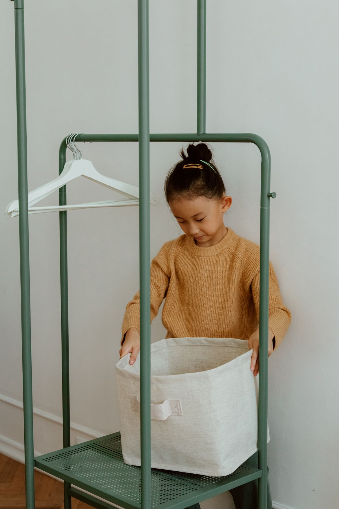
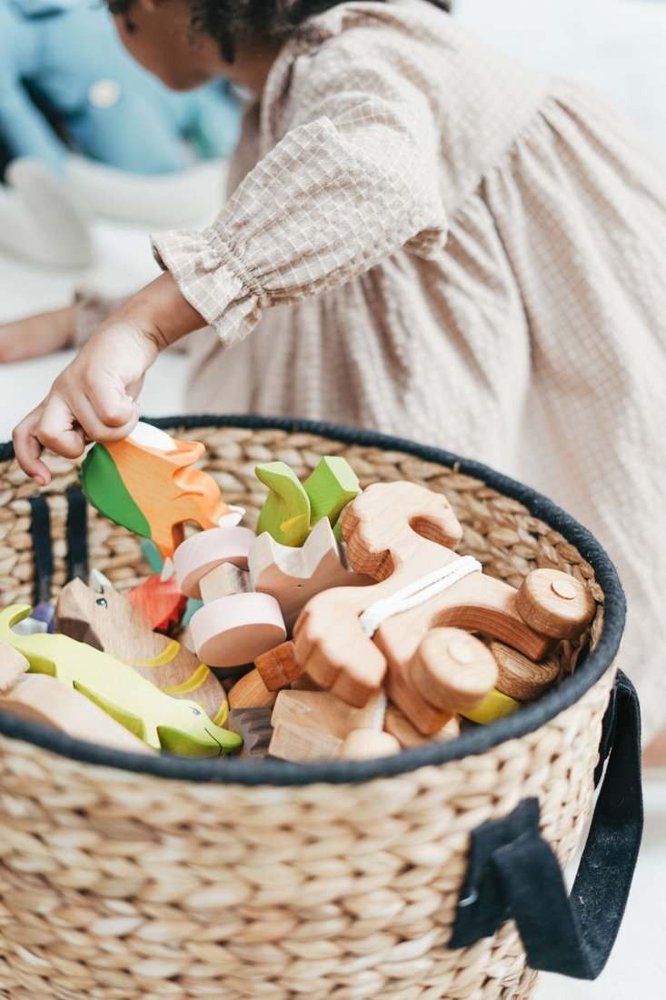

Family Life
How can routines leave room for neurodivergent needs?
Flexible steps, communication preferences, and a gentler screen.
Read the Guidesnacks, snuggles and sanity:in parenting, every little win counts
Flexible ideas for different ways of thinking, learning, and experiencing the world.
Neurodivergent children & mental health
Understanding, practical support, and trusted resources for children who think, communicate, and experience the world in different ways. Mental health matters alongside everyday needs.
Neurodivergence and mental health conditions are not interchangeable. Each child has individual strengths and support needs.

Prepare for a thoughtful conversation instead of diagnosing from a checklist.
ADHDReduce the number of things to remember at once.
ADHDTurn a broad concern into a specific conversation with the school team.
ADHDA task can be difficult to begin even when a child understands it.
ADHDA reminder is useful when the child can notice and act on it.
ADHDA supported responsibility can build participation without requiring independent planning at every step.
ADHDPrepare questions about daily functioning, available supports, and follow-up.

Get clarity about screening and evaluation while keeping your child’s strengths in view.
AutismMake room for words, gestures, pictures, and the communication your child already uses.
AutismA short resource path for families in the United States.
AutismA change may be easier to process when it is concrete, honest, and presented in a preferred communication format.
AutismA break can be an access need rather than a reward.
AutismA loved interest can offer a comfortable starting point for shared attention.
AutismAsk about practical access to learning, communication, sensory comfort, and safety.
An everyday listening plan, with clear next steps when worries interfere with life.
Children’s Mental HealthA low-pressure conversation that leaves room for different ways of communicating.
Children’s Mental HealthMove from a concern to a practical appointment plan.
Children’s Mental HealthSimple, honest language can make asking for help feel ordinary.
Children’s Mental HealthA shared picture of the day can help adults notice where support is needed.
Children’s Mental HealthConversation is only one way to communicate.
Children’s Mental HealthConcrete changes help a qualified professional understand your concern.
Family Life
Flexible steps, communication preferences, and a gentler screen.
Read the GuideTrusted resources
U.S. resources checked October 9, 2026. Ask providers about eligibility, access, and individual needs.
CDC explains the steps in diagnosis and questions to discuss with your child’s clinician.
Visit the ResourceLearn the difference between monitoring, screening, and evaluation.
Visit the ResourceExplore CDC’s information on individualized school supports for ADHD.
Visit the ResourceNIMH information on concerns, evaluation, and finding help.
Visit the ResourceFind state contacts and learn how to request an evaluation.
Visit the ResourceFind local information and support for families of children and youth with disabilities.
Visit the ResourceGeneral education, not diagnosis or individualized treatment. If you need immediate U.S. crisis support, call or text 988; call 911 for immediate danger.